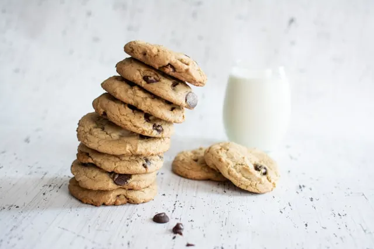

Home
Cookies

Description
Cookies aux pépites de chocolat super moelleux
Ces cookies sont vraiment les meilleurs du monde !
Ingrédients
- Beurre mou
- Sucre (roux et blanc)
- Oeufs
- Farine
- Levure chimique
- Pépites de chocolat
Etapes
- Préchauffer le four à 200°C
- Mélanger le beurre mlou avec les 2 sucres et les oeufs
- Ajouter la farine, la levure et une pincée de sel
- Ajouter les pépites de chocolat
- Une fois la pate prête, formez des boules de la taille d'un cuillère à soupe et disposez les sur une plaque de cuisson
- Faire cuire 10 minutes